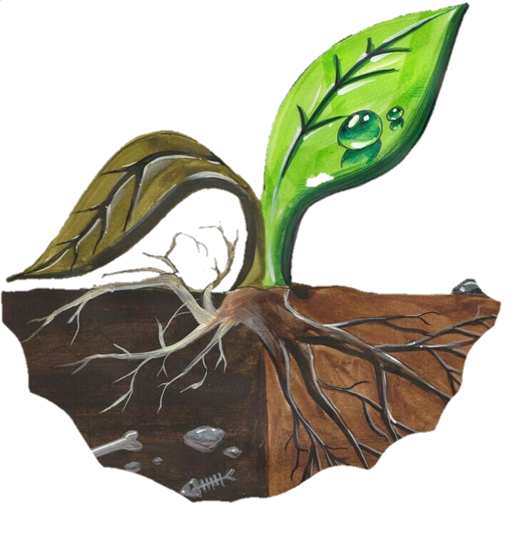

Importancia da conservação de recursos hídricos
A importância da conservação da água transcende seu papel fundamental para a vida na Terra; ela é essencial para o equilíbrio ambiental, a saúde humana e o desenvolvimento econômico sustentável. Como recurso finito e indispensável, a água sustenta ecossistemas naturais, proporciona habitat para uma vasta biodiversidade e é crucial para a agricultura, indústria e energia.
Além de ser essencial para a produção de alimentos e bens de consumo, a água desempenha um papel crucial na mitigação das mudanças climáticas, sendo um agente de refrigeração natural através da evaporação e condensação. Além disso, a água é vital para a saúde humana, desde o abastecimento doméstico até a higiene e a produção de alimentos.
No entanto, apesar da sua importância crítica, a água está enfrentando crescentes desafios de escassez e poluição. A urbanização rápida, a agricultura intensiva, as mudanças climáticas e o crescimento populacional estão exercendo pressão sobre os recursos hídricos, tornando a gestão sustentável da água uma prioridade global.
Portanto, a conservação da água não é apenas uma necessidade, mas também uma responsabilidade compartilhada por todos. Adotar práticas de uso eficiente da água, investir em tecnologias de reuso e reciclagem, proteger ecossistemas aquáticos e promover políticas públicas eficazes são passos essenciais para garantir a disponibilidade de água limpa e sustentável para as gerações futuras. Essas ações não só preservam a vida e o meio ambiente, mas também promovem um futuro mais seguro e próspero para todos.
Preservação dos Ecossistemas
A conservação da água é crucial para preservar ecossistemas naturais. Rios, lagos, pântanos e oceanos dependem de um equilíbrio hídrico adequado para sustentar a vida vegetal e animal. A água mantém habitats aquáticos essenciais para espécies diversas, contribuindo para a biodiversidade global. Além disso, ecossistemas saudáveis ajudam na regulação do clima, na purificação da água e no controle de enchentes e secas.
Impacto na Saúde Humana
A água limpa e acessível é fundamental para a saúde humana. Ela é necessária para o consumo diário, higiene pessoal, produção de alimentos e funcionamento de serviços de saúde. A escassez de água potável e o acesso inadequado à água limpa podem levar a doenças transmitidas pela água, como cólera e disenteria. Portanto, a conservação da água não só protege a saúde individual, mas também promove comunidades mais saudáveis e resilientes.
Importância Econômica
A água desempenha um papel crucial na economia global. Setores como agricultura, indústria, energia e turismo dependem da água para suas operações. A disponibilidade e qualidade da água influenciam diretamente na produtividade agrícola, eficiência industrial e crescimento econômico. Investir em práticas sustentáveis de gestão hídrica não apenas protege recursos naturais, mas também garante a sustentabilidade econômica a longo prazo, promovendo empregos e estabilidade financeira em comunidades ao redor do mundo.